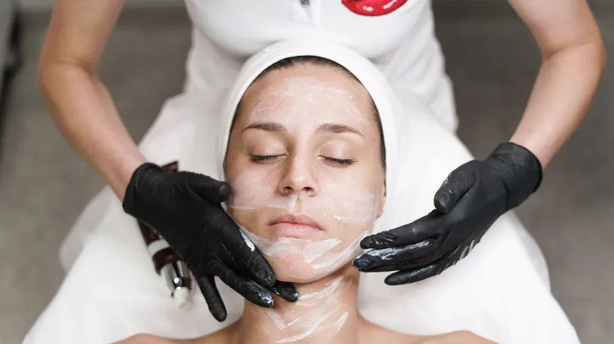

각질 관리 초보자 필수 가이드: 내 피부 타입에 맞는 방법은?
사진: Amar Preciado / Pexels (무료 이미지, 출처 표기)
각질 관리에 처음이시거나 어떤 방법이 맞을지 고민되시나요?

맑고 건강한 피부를 위한 첫걸음은 올바른 각질 관리에서 시작됩니다. 무심코 지나쳤던 각질이 피부 트러블의 원인이 되거나, 애써 바른 좋은 화장품의 흡수를 방해하기도 합니다. 이 글에서는 각질 관리 초보자를 위해 내 피부에 맞는 방법을 찾고, 올바른 관리 루틴을 만드는 데 필요한 모든 정보를 정리했습니다.
물리적 각질 제거와 화학적 각질 제거의 차이부터 피부 타입별 추천 방법, 그리고 관리 시 흔히 하는 실수까지 자세히 알아보고 자신 있게 첫걸음을 내디뎌 보세요.
각질, 왜 관리해야 할까요?
우리 피부는 약 28일 주기로 새로운 세포를 만들고 오래된 세포(각질)를 탈락시키는 재생 과정을 거칩니다. 하지만 다양한 외부 요인이나 노화 등으로 이 주기가 흐트러지면, 죽은 각질 세포가 피부 표면에 쌓여 문제를 일으킵니다.
과도한 각질은 모공을 막아 여드름, 뾰루지 등 피부 트러블을 유발합니다. 또한 피부를 칙칙하게 만들고, 스킨케어 제품의 유효 성분이 피부 속으로 제대로 흡수되지 못하게 방해하기도 합니다. 주기적인 각질 관리는 매끈하고 환한 피부는 물론, 유효 성분의 흡수율을 높여 건강한 피부 상태를 유지하는 데 필수적입니다.
내 피부에 맞는 각질 관리법 찾기: 물리적 vs 화학적
각질 제거 방법은 크게 물리적 각질 제거와 화학적 각질 제거로 나뉩니다. 각자의 장단점과 사용법이 다르므로, 자신의 피부 타입과 상태에 맞춰 신중하게 선택하는 것이 중요합니다.
화학적 각질 제거의 주요 성분으로는 다음과 같은 것들이 있습니다.
- AHA (Alpha Hydroxy Acid, 알파 하이드록시 산): 수용성 성분으로, 주로 피부 표면의 묵은 각질을 부드럽게 제거합니다. 보습 효과도 있어 건성 및 노화 피부에 추천됩니다. 글리콜산, 젖산 등이 대표적입니다.
- BHA (Beta Hydroxy Acid, 베타 하이드록시 산): 지용성 성분으로, 모공 속 피지와 노폐물 제거에 탁월합니다. 블랙헤드나 화이트헤드가 고민인 지성 및 여드름성 피부에 특히 효과적입니다. 살리실산(바하)이 가장 흔합니다.
- PHA (Poly Hydroxy Acid, 폴리 하이드록시 산): AHA와 유사하지만 분자 구조가 커서 피부에 더 천천히, 순하게 작용합니다. 민감성 피부나 각질 관리를 처음 시작하는 초보자에게 적합합니다. 글루코노락톤, 락토바이오닉산 등이 있습니다.
초보자를 위한 각질 관리 단계별 가이드
각질 관리는 올바른 순서로 진행해야 효과를 극대화하고 피부 자극을 최소화할 수 있습니다. 다음은 초보자를 위한 각질 관리 단계입니다.
- 세안으로 피부 준비: 각질 제거 전, 미온수와 순한 클렌저로 얼굴의 메이크업과 먼지를 깨끗하게 씻어냅니다. 피부에 불필요한 노폐물이 남아있으면 각질 제거 효과가 떨어지고 자극이 될 수 있습니다.
- 피부 타입에 맞는 각질 제거제 사용: 건조하고 민감한 피부라면 PHA 성분이나 순한 효소 파우더를, 지성 및 여드름성 피부라면 BHA 성분을 선택해 제품의 지시에 따라 사용합니다. 물리적 스크럽은 피부 자극을 줄이기 위해 물기가 있는 상태에서 부드럽게 롤링하는 것이 좋습니다.
- 미온수로 충분히 헹구기: 각질 제거 성분이나 알갱이가 피부에 남아있지 않도록 미온수로 여러 번 꼼꼼하게 헹궈냅니다. 잔여물이 남으면 피부 트러블을 유발할 수 있습니다.
- 진정 및 보습 케어: 각질 제거 후에는 피부가 일시적으로 건조해지고 민감해질 수 있습니다. 진정 성분(병풀 추출물 등)이 함유된 토너나 세럼으로 피부를 정돈한 후, 보습 크림을 충분히 발라 피부 장벽을 강화하고 수분을 공급합니다.
- 자외선 차단제 필수 사용: 각질 제거 후에는 피부가 자외선에 더욱 민감해지므로, 낮 시간 외출 시에는 반드시 SPF 30 이상의 자외선 차단제를 꼼꼼히 바르는 것이 중요합니다. 이는 2026년 11월 기준 모든 피부과 전문의가 권장하는 사항입니다.
각질 관리 주기는 피부 타입과 사용 제품에 따라 다르지만, 초보자는 주 1회 정도로 시작하여 피부 반응을 살피며 조절하는 것이 좋습니다.
각질 관리 시 흔히 하는 실수와 주의할 점
- 과도한 각질 제거: 너무 잦거나 강한 각질 제거는 오히려 피부 장벽을 손상시키고 피부를 더 건조하고 민감하게 만듭니다. '적당히'가 중요합니다.
- 햇빛 노출 주의: 특히 AHA, BHA 같은 화학적 각질 제거제를 사용한 후에는 피부가 자외선에 취약해지므로, 자외선 차단제 사용을 게을리하지 않아야 합니다.
- 피부 상태 무시: 피부에 상처가 있거나 심한 트러블이 있는 상태에서는 각질 제거를 피해야 합니다. 피부 컨디션이 좋지 않을 때는 쉬어주는 것이 좋습니다.
- 제품 혼용 주의: 여러 가지 강한 각질 제거제를 한꺼번에 사용하거나, 다른 자극적인 성분(레티놀 등)과 함께 사용하는 것은 피부에 부담을 줄 수 있습니다.
- 패치 테스트: 새로운 각질 제거제를 사용하기 전에는 팔 안쪽이나 귀 뒤쪽에 소량을 발라 패치 테스트를 진행하여 알레르기 반응이나 자극 여부를 확인하는 것이 안전합니다.
각질 관리 후 스킨케어, 이렇게 하세요
각질 제거는 단순히 묵은 각질을 벗겨내는 것을 넘어, 이후 스킨케어의 효과를 높이는 중요한 과정입니다. 각질 제거 후에는 피부가 평소보다 활성 성분을 잘 흡수할 준비가 되어 있으므로, 적절한 후속 관리가 필수적입니다.
가장 중요한 것은 충분한 수분 공급과 피부 진정입니다. 히알루론산, 세라마이드, 판테놀 등 보습 및 진정 성분이 풍부한 토너, 에센스, 크림을 사용하여 피부 장벽을 재건하고 건조함을 막아야 합니다. 또한, 피부에 자극이 될 수 있는 알코올이나 강한 향료가 들어간 제품은 피하고, 순하고 저자극성 제품 위주로 사용하는 것이 좋습니다.
자주 묻는 질문
Q. 각질 관리는 얼마나 자주 해야 할까요?
A. 피부 타입과 사용하는 제품에 따라 다르지만, 일반적인 초보자라면 주 1회 정도를 권장합니다. 민감성 피부는 2주에 1회 정도로 시작하고, 피부가 건강한 지성 피부라면 주 2회까지 늘려볼 수 있습니다. 중요한 것은 피부의 반응을 잘 살피는 것입니다.
Q. 민감성 피부도 각질 관리가 필요한가요?
A. 네, 필요합니다. 다만, 강한 물리적 스크럽이나 고농도 화학 제품 대신 PHA 성분이나 저자극 효소 세안제 등 순한 제품을 사용하는 것이 좋습니다. 항상 패치 테스트를 거치고 피부 컨디션이 좋은 날에만 최소한으로 관리하는 것을 추천합니다.
Q. 각질 제거 후 따끔거려요. 괜찮은 건가요?
A. 가벼운 따끔거림은 제품에 따라 있을 수 있지만, 심한 통증이나 붉어짐, 가려움증이 동반된다면 즉시 사용을 중단하고 미온수로 깨끗이 헹궈내야 합니다. 이는 피부에 자극이 너무 강하거나 알레르기 반응일 수 있으니 전문가와 상담하는 것이 좋습니다.
🔗 이 글도 함께 보면 좋아요: 내 피부에 착붙! 쿠션 파데 성분 고르는 법 & 주의사항 체크리스트
관련 추천 상품
각질제거제, 필링젤, 아하바하세럼 관련 인기 상품 보러가기
이 포스팅은 쿠팡 파트너스 활동의 일환으로, 이에 따른 일정액의 수수료를 제공받습니다.